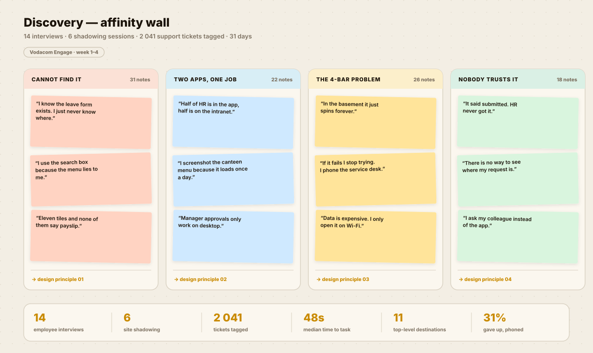
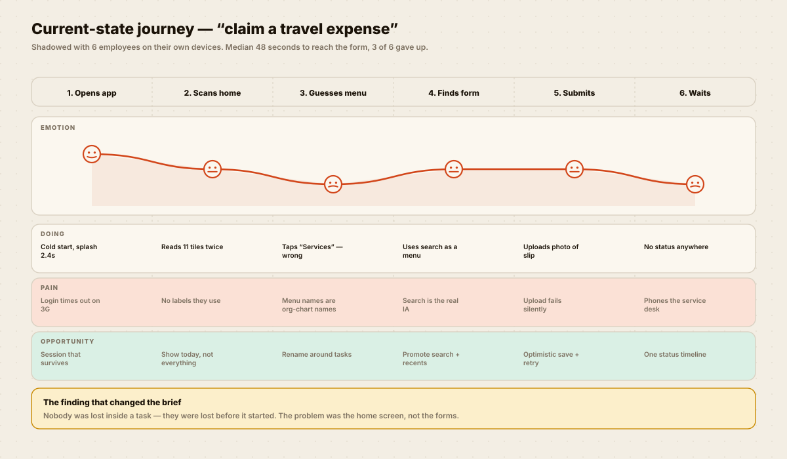
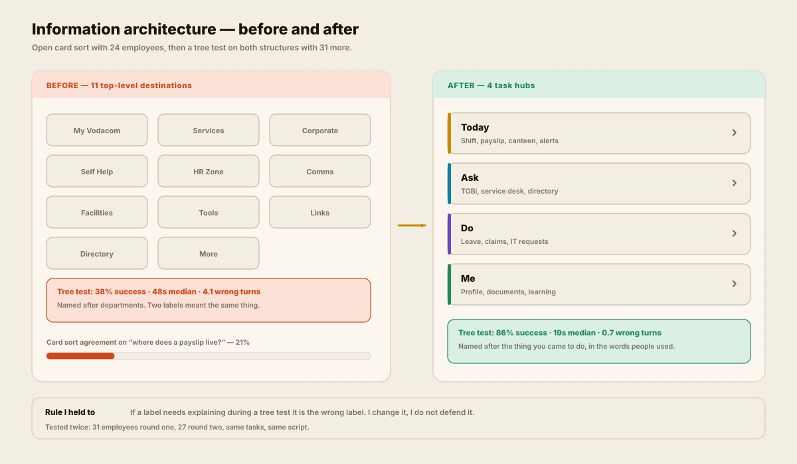
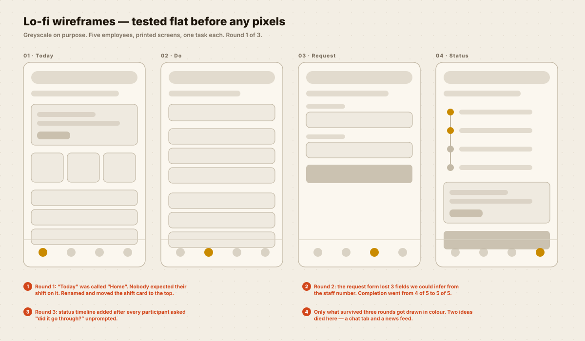
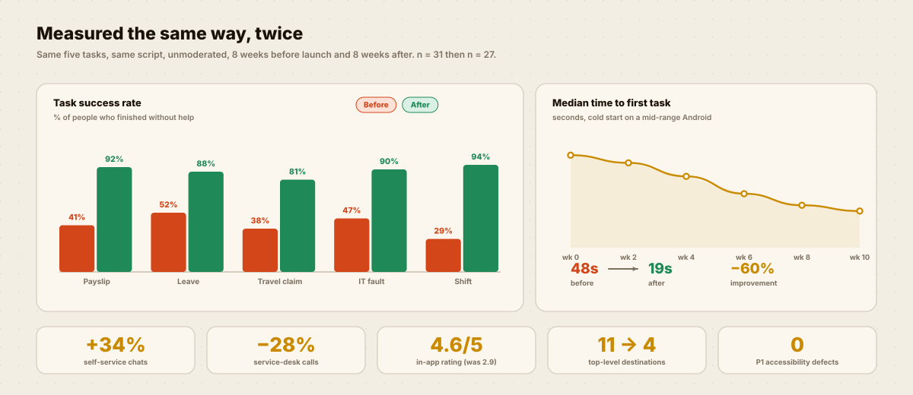

UX / UI & product design
TWENTY-FIVE THOUSAND PEOPLE.
ONE HOME SCREEN.
An employee app everybody had installed and nobody used for real work. I rebuilt what it was made of, not what it looked like — and measured the same five tasks before and after.

The three screens that carry the whole app. Everything else is a detail page.
IT WAS NOT A DESIGN PROBLEM YET.
Adoption was 91%. Weekly active use was 12%. The brief I was handed said “refresh the UI”. Four weeks of research said something else.
What the brief assumed
The app looked dated, so people avoided it.
A visual refresh and a new icon set would fix engagement.
What the evidence said
People could not find anything. Search was doing the job the menu should have done.
31% of employees who opened the app gave up and phoned the service desk instead.


HOW I GOT THERE.
Click a step. Each one shows the actual artefact it produced, not a description of it.
Problem statement
“An employee needs to complete one small admin task in the gap between meetings — and today the app makes them hunt for it.”
The four principles
01 Name things the way people say them.
02 Show today, not everything.
03 Every action must have a visible status.
04 Assume a bad signal and an old phone.


TRY THE REBUILD.
Pick a task and watch the route people actually took, next to the route they take now. Real paths from the tree tests.
Before — 11 destinations
After — 4 task hubs
WHAT ACTUALLY SHIPPED.
Three screens carry the app. The rest are detail pages that inherit from them.
MEASURED THE SAME WAY, TWICE.
Same five tasks, same script, unmoderated. Eight weeks before launch and eight weeks after.

THE HONEST BIT.
Things that did not go to plan, because a case study without them is a brochure.
What I would do differently
- I ran the first card sort with head-office staff only. The retail and call-centre vocabulary was different enough that I had to redo it in week six. Recruit for the edges first.
- “Ask” was the weakest of the four hubs — it is really two things (search a person, ask a question) wearing one label. It works, but I would split it.
- I did not instrument the empty states, so I still cannot tell you how often people hit them. That is a measurement gap I created.
- The web build lagged mobile by five weeks. Designing three platforms at once with one designer meant web got the leftovers.
Where the frontend part mattered
I wrote the Today screen in the Angular codebase rather than specifying it. It removed a week of back-and-forth about scroll behaviour and let me feel how slow the shift card really was on a cheap phone.
That is the part of my role that is hard to put in a Figma file.
What I would keep
Agreeing the benchmark before designing anything. It is the only reason there is an “after” number at all, and it ended arguments about taste very quickly.
WANT THIS
ON YOUR PRODUCT?
Tell me the one flow that matters most to your business and what it currently costs you. I will come back with what I would research first and what I would ship first.